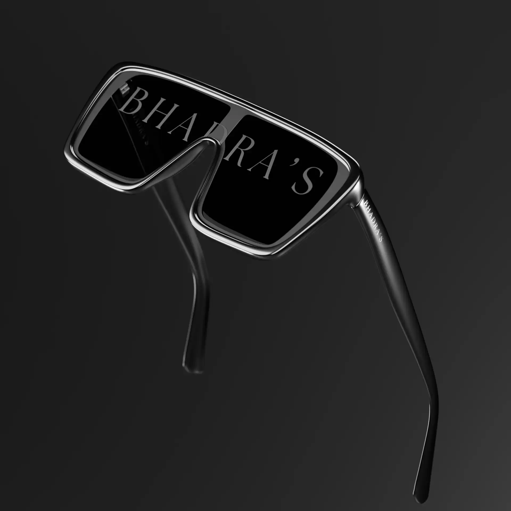

This project utilizes high-contrast lighting techniques to define the fluid silhouettes of modern eyewear. By engineering a cinematic black void environment, we isolated the form to emphasize volumetric depth and refractive properties. The outcome is a series of striking visual assets that showcase our mastery of shadow interplay and reflection control.